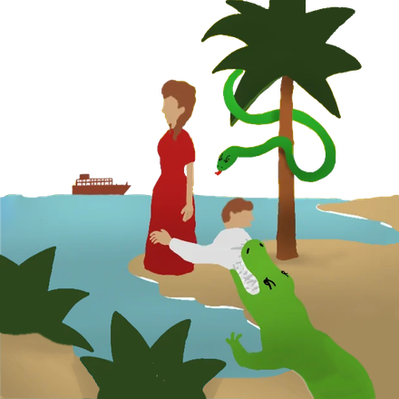

Bienvenue en Léonida. Installe-toi, le soleil est déjà levé.

Nous sommes une communauté de jeu et de recherche de groupe centrée sur Grand Theft Auto Online et sur GTA VI. Notre objectif principal est de créer et de maintenir une communauté saine où les joueurs peuvent se réunir pour jouer, discuter et passer du temps régulièrement avec d'autres membres et notre équipe.
Bien que nous ne puissions pas prédire l'avenir, nous avons certainement l'intention de nous améliorer continuellement afin de vous offrir la meilleure expérience possible. Nous espérons sincèrement pouvoir le faire avec votre soutien et votre participation.